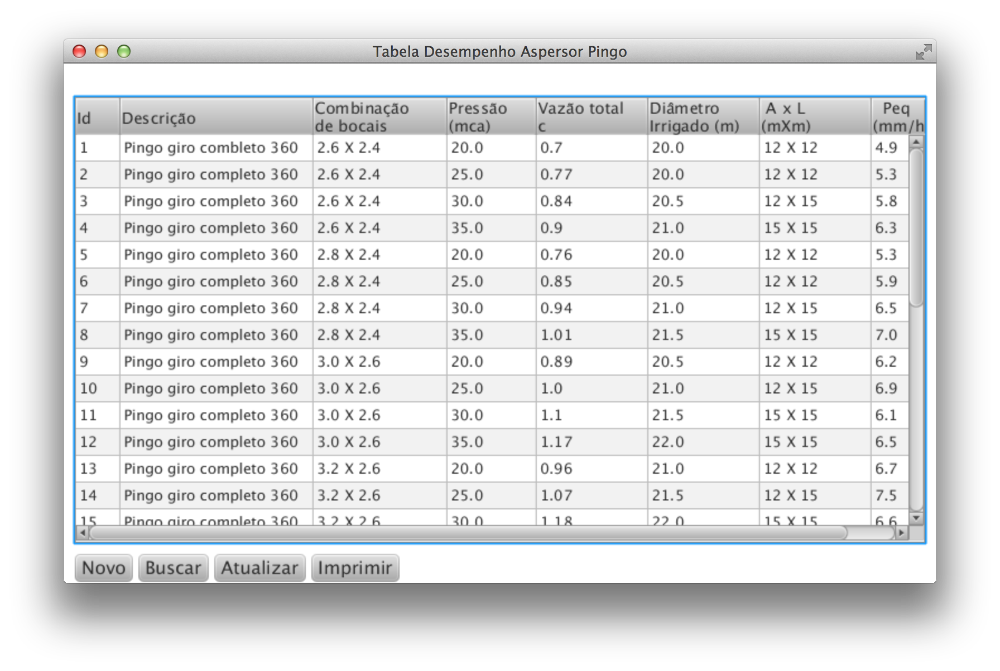
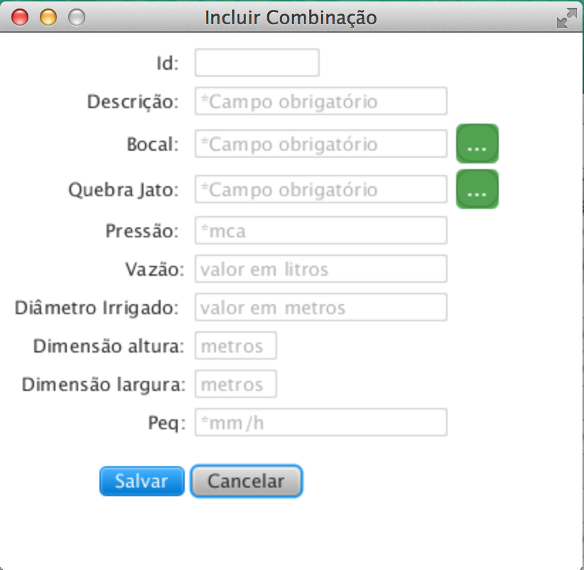

O que é e para que serve a Tabela de Desempenho Aspersor Pingo?
A tela de desempenho é utilizada como forma de armazenar as informações do fabricante referente aos bocais utilizados, posteriomente pode ser realizado a comparação dos resultados obtidos com as informações do fabricante. É possível gerar um arquivo Excell que é uma forma de saída dos dados cadastrados.
Abaixo a tela com a listagem das combinações

Esta tela proporciona várias ações:
Cadastro de Combinação de Bocais
Cadastro de uma nova combinação, ao acionar o botão será listado a tela de combinação de bocais:

Descrição: campo texto obrigátório
Bocal: selecionar o bocal utilizado no ensaio, no botão é possível visualizar a listagem dos bocais cadastrados. Dois cliques para selecionar; ver cadastro de bocal »
Quebra Jato: selecionar o quebra jato utilizado no ensaio, no botão é possível visualizar a listagem dos quebra jato cadastrados. Dois cliques para selecionar; ver cadastro de Quebra Jato »
Pressão: campo numérico, referente a pressão da água liberada para o aspersor central, unidade de medida indicada metro de coluna de água (mca);
Vazão: campo numérico não obrigatório referente a vazão registrado no relógio de vazão de água, unidade de medida indicada Litros;
Diâmetro Irrigado: campo numérico referente ao diâmetro irrigado;
Dimensão altura: campo numérico obrigatório referente a altura em metros da malha de pluviometros;
Dimensão largura: campo numérico obrigatório referente a largura em metros da malha de pluviometros;
Atualizar/Excluir Combinação
Para atualizar uma combinação selecione-a na listagem e duplo clique, ele abrirá a tela ao lado, atualize as informações e acione o botão para armazenar as alterações.
Caso deseje excluir uma combinação, selecione na listagem e duplo clique, acione o botão .
Busca
Busca de uma combinação específica;
Atualização da listagem de combinação
Gera um arquivo excell no diretório da aplicação contendo a tabela de desempenho aspersor pingo cadastrada previamente.